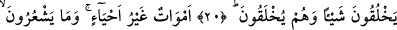
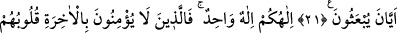
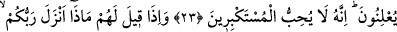
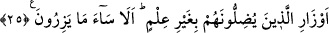
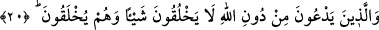

ALLAH GİZLEDİĞİNİZİ
AÇIKLADIĞINIZI BİLİR
19. Allah, gizlediğinizi de açıkladığınızı da bilir.
20. Allah’ı bırakıp da taptıkları (putlar), hiçbir şey yaratamazlar. Çünkü onlar
kendileri yaratılmışlardır.
21. Onlar diriler değil, ölülerdir. Ne zaman diriltileceklerini de bilmezler.
22. İlâhınız bir tek ilahtır. Fakat âhirete inanmayanlar var ya, onların kalpleri
inkârcı, kendileri de böbürlenen kimselerdir.
23. Hiç şüphesiz Allah, onların gizlediklerini de açığa vurduklarını da bilir. O,
büyüklük taslayanları asla sevmez.
24. Onlara: Rabbiniz ne indirdi? denildiği zaman, “Öncekilerin masallarını”
derler.
25. Kıyâmet gününde kendi günahlarını tam olarak taşımaları ve bilgisizce
saptırmakta oldukları kimselerin günahlarından da bir kısmını yüklenmeleri için
(öyle derler). Bak ne kötü şey yükleniyorlar!
“Allah, gizlediğinizi” gizlediğiniz inanç ve amelleri “de açıkladığınızı” inanç ve
amellerden açıktan yaptıklarınızı “da bilir.” Sizin gizliniz ve açığınız, O’nun geniş
ilmine nisbetle eşittir. Öyleyse O’nun hakkı O’na karşı takvâ sâhibi olunması, O’ndan
sakınılması ve rızâsına muhâlif olan şeylere cür’et edilmemesidir.